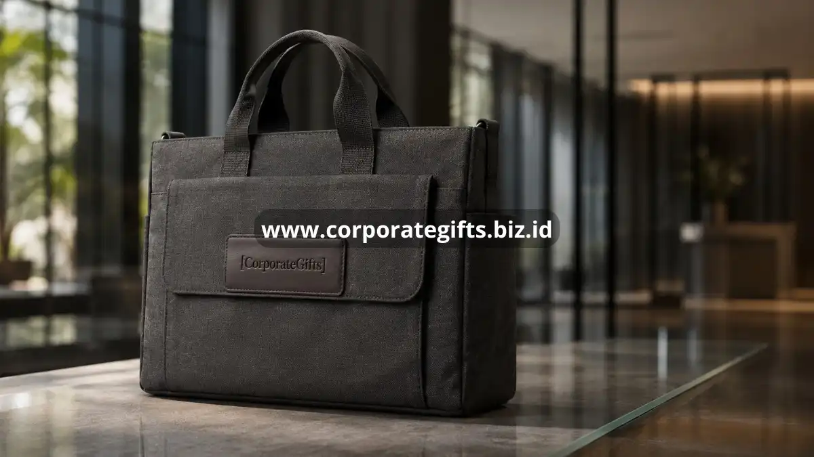

Poin Penting:
- Souvenir kantor elegan sebaiknya fungsional, bukan sekadar dekoratif.
- Tumbler custom logo dan tas kerja korporat termasuk pilihan paling populer.
- Set alat tulis premium cocok untuk kesan formal dan eksekutif.
- Desain minimalis dengan warna netral lebih tahan tren dibandingkan desain mencolok.
- CorporateGifts menyediakan berbagai pilihan souvenir kantor siap custom logo perusahaan.
Memilih souvenir kantor yang tepat untuk klien dan mitra bisnis bukan perkara sepele. Barang yang dipilih akan mewakili wajah perusahaan setiap kali digunakan oleh penerimanya, sehingga kualitas dan relevansinya harus benar-benar dipertimbangkan. Artikel ini membahas berbagai ide souvenir kantor elegan yang cocok untuk klien maupun mitra bisnis, mulai dari kategori alat tulis, aksesori kerja, hingga barang fungsional harian, lengkap dengan pertimbangan mengapa masing-masing kategori layak dipilih.
Mengapa Souvenir Kantor Penting untuk Klien dan Mitra Bisnis?
Souvenir kantor penting bagi klien dan mitra bisnis karena berfungsi sebagai simbol apresiasi sekaligus media promosi berkelanjutan. Barang yang digunakan setiap hari secara tidak langsung menjaga nama perusahaan tetap hadir dalam ingatan penerimanya.
Ketika seorang klien menerima souvenir yang berkualitas, mereka cenderung mengasosiasikan kualitas barang tersebut dengan kualitas layanan perusahaan Anda. Sebaliknya, souvenir yang terkesan murahan dapat menimbulkan persepsi kurang baik terhadap profesionalisme bisnis Anda secara keseluruhan.
Selain nilai promosi, souvenir kantor juga menjadi cara halus untuk menunjukkan bahwa perusahaan menghargai hubungan kerja sama yang telah terjalin, bukan hanya melihat klien atau mitra sebagai transaksi bisnis semata.
Apa Saja Jenis Alat Tulis Premium yang Cocok sebagai Souvenir?
Alat tulis premium yang cocok sebagai souvenir kantor meliputi pulpen metal dengan finishing elegan, notebook kulit sintetis, dan set organizer meja. Kategori ini populer karena kesan formal dan eksekutif yang melekat pada penggunaannya.
Pulpen dengan bahan metal dan finishing matte atau chrome memberikan kesan mewah tanpa terlihat berlebihan. Barang ini sering digunakan dalam pertemuan formal, sehingga logo perusahaan pada badan pulpen berpotensi terlihat oleh banyak pihak selama proses bisnis berlangsung.
Notebook dengan sampul kulit sintetis atau linen premium juga menjadi pilihan populer karena kesan profesional yang kuat. Notebook semacam ini sering digunakan dalam rapat, sehingga branding perusahaan akan terus terlihat setiap kali digunakan oleh penerimanya.
Set organizer meja, yang biasanya mencakup tempat pulpen, sticky notes holder, dan card holder, menjadi pilihan menarik untuk klien dengan posisi manajerial karena memberikan kesan rapi dan terorganisir pada meja kerja mereka.

Bagaimana Tumbler dan Aksesori Minum Bisa Menjadi Souvenir Berkesan?
Tumbler custom logo dan aksesori minum lainnya bisa menjadi souvenir berkesan karena digunakan hampir setiap hari oleh penerimanya, baik di kantor maupun luar kantor. Frekuensi penggunaan yang tinggi membuat eksposur logo perusahaan menjadi lebih optimal dibandingkan barang yang jarang dipakai.
Tumbler stainless dengan desain minimalis dan fitur menjaga suhu minuman menjadi favorit karena kombinasi fungsi dan estetika. Warna netral seperti hitam, abu-abu, atau navy cenderung lebih fleksibel digunakan oleh penerima dari berbagai kalangan dibandingkan warna-warna mencolok.
Selain tumbler, aksesori pendukung seperti coaster custom atau French press mini juga bisa menjadi pelengkap hampers yang membuat paket souvenir terasa lebih lengkap dan personal, terutama untuk klien yang gemar menikmati kopi atau teh di sela pekerjaan.
Mengapa Tas Kerja Korporat Menjadi Pilihan Souvenir Kelas Atas?
Tas kerja korporat menjadi pilihan souvenir kelas atas karena nilai fungsionalnya yang tinggi dan kesan eksklusif yang melekat pada penggunaannya. Barang ini biasanya diberikan untuk klien atau mitra dengan level hubungan bisnis yang lebih strategis.
Tas laptop dengan bahan kanvas premium atau kulit sintetis berkualitas memberikan kesan profesional sekaligus praktis untuk mobilitas kerja sehari-hari. Desain dengan kompartemen yang rapi menambah nilai fungsional yang dihargai oleh penerima yang sering bepergian untuk keperluan bisnis.
Selain tas laptop, tote bag korporat dengan desain minimalis juga menjadi alternatif yang lebih ringan namun tetap elegan, cocok digunakan sebagai souvenir untuk acara seminar, konferensi, atau gathering bisnis berskala menengah.
Apa Pertimbangan Desain agar Souvenir Kantor Terlihat Elegan?
Pertimbangan desain agar souvenir kantor terlihat elegan meliputi pemilihan warna netral, penempatan logo yang proporsional, dan kualitas material yang tahan lama. Desain yang terlalu ramai justru dapat mengurangi kesan profesional dari souvenir tersebut.
Warna netral seperti hitam, putih, abu-abu, navy, atau earth tone cenderung lebih tahan tren dan cocok digunakan oleh penerima dari berbagai latar belakang, dibandingkan warna-warna mencolok yang berisiko terlihat kurang formal.
Penempatan logo sebaiknya proporsional dan tidak mendominasi seluruh permukaan barang. Logo yang terlalu besar justru dapat membuat souvenir terkesan seperti barang promosi murahan, sementara penempatan yang tepat memberikan kesan elegan dan tetap efektif sebagai media branding.
Kualitas material menjadi faktor penentu daya tahan souvenir dalam jangka panjang. Material yang baik memastikan souvenir tetap terlihat baik meskipun digunakan dalam waktu lama, sehingga nilai branding tetap terjaga.
Jika Anda sedang mencari souvenir kantor elegan untuk klien dan mitra bisnis, CorporateGifts menyediakan berbagai pilihan tumbler custom, alat tulis premium, hingga tas kerja korporat yang siap disesuaikan dengan identitas merek perusahaan Anda. Hubungi CorporateGifts sekarang untuk mendapatkan penawaran souvenir kantor terbaik.
FAQ
1. Apa itu souvenir kantor elegan?
Souvenir kantor elegan adalah hadiah korporat yang memadukan fungsi, kualitas bahan, dan desain minimalis yang mencerminkan profesionalisme perusahaan.
2. Mengapa souvenir kantor penting untuk klien dan mitra bisnis?
Souvenir kantor penting karena berfungsi sebagai simbol apresiasi sekaligus media promosi berkelanjutan yang menjaga nama perusahaan tetap hadir dalam ingatan penerimanya.
3. Apa saja contoh alat tulis premium yang cocok dijadikan souvenir?
Contohnya meliputi pulpen metal dengan finishing elegan, notebook kulit sintetis, dan set organizer meja.
4. Mengapa tumbler custom logo sering dipilih sebagai souvenir?
Tumbler dipilih karena fungsional, digunakan setiap hari, dan memiliki visibilitas tinggi untuk menampilkan logo perusahaan, terutama jika memiliki desain minimalis dan material yang baik.
5. Bagaimana cara memilih desain souvenir agar terlihat elegan?
Pilih warna netral (seperti hitam, abu-abu, atau navy), gunakan material berkualitas, dan pastikan penempatan logo proporsional agar tidak mendominasi seluruh permukaan barang.
Butuh rekomendasi cepat untuk corporate gift?
Chat tim Pusat Souvenir & Merchandise Kantor untuk kurasi pilihan sesuai budget & kebutuhan brand Anda.